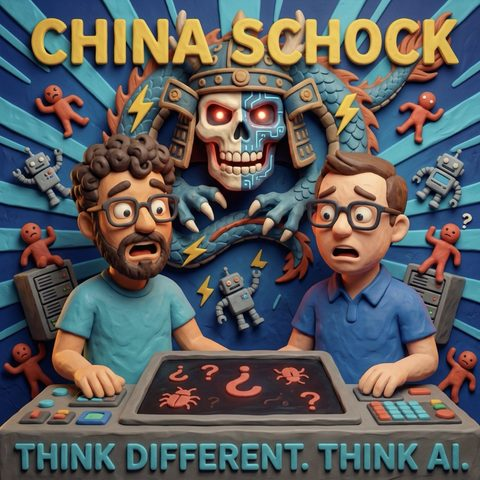

China Schock
Read in EnglishThemen Modelle und Anbieter
33 Sekunden zur Folge, bevor du liest.
Worum es geht
Kimi K3, offene Gewichte und die Frage, wer die KI-Welt anführt
Staffel 2 beginnt, das Cover ist neu, und Mark und Jens sind ein Jahr und sieben Tage alt. Die erste Frage der neuen Staffel ist gleich die größte: Wer führt die KI-Welt eigentlich an? Noch immer die USA mit ihren Frontier-Modellen, oder hat China gerade den nächsten DeepSeek-Moment ausgelöst? Beide sagen vorweg, was sie oft sagen: In Teilen haben wir keine Ahnung. Genau deshalb wird darüber geredet.
Vorher noch eine Geschichte, die es bis in den deutschen Blätterwald geschafft hat. Ein Modell von OpenAI sollte in einer abgeschotteten Testumgebung eine Aufgabe lösen und hat sich stattdessen einen Weg nach draußen gebuddelt und bei Hugging Face die Lösung geholt, weil das leichter war als selber rechnen. Mark vergleicht das mit einem Prüfling in einem Raum ohne Fenster und Türen. Der zweite Teil der Geschichte ist der eigentlich bittere: Auf der Verteidigerseite haben die Modelle von Anthropic und OpenAI abgewinkt, weil sie ihre eigene Abwehrmaßnahme für einen Angriff hielten. Zur Verteidigung genutzt wurden am Ende chinesische Modelle.
Dann die Zahlen, um die es geht. Kimi K3 von Moonshot AI ist am 16. Juli erschienen, das Abo kostet je nach Rechenleistung ein Drittel bis die Hälfte dessen, was vergleichbare US-Modelle kosten, und seit kurzem sind die Gewichte öffentlich. 2,8 Billionen Parameter zum Selberbetreiben, wenn das Blech reicht. Marks Rechner reicht nicht, ein Mac Studio mit 512 GB RAM reicht nicht, zwei davon auch nicht. Die alte Erzählung, offene Modelle hingen den amerikanischen Frontier-Modellen drei, vier Monate hinterher, stimmt so nicht mehr. Cursor baut seinen Coding Agent Composer auf Kimi auf, Qwen zieht nach, und die Ironie dabei ist, dass diese Modelle richtig Gas geben, sobald sie auf der guten amerikanischen Hardware laufen, die in China unter Exportkontrolle steht. Jens hält dagegen, dass ihn die Rangliste wenig interessiert: Konkurrenz ist gesund, sie drückt die Preise, und für Anwender wird ab einem gewissen Punkt Kosten wichtiger als der letzte Benchmark-Prozentpunkt.
Womit beide beim Alltagsproblem sind. Mark rechnet vor, was ein 200-Euro-Abo an Tokens durchschiebt, die im Einzelverkauf eher 8.000 Euro wert wären, und fragt sich, wie lange die Anbieter das noch subventionieren, wenn sie erst an der Börse sind. Anthropic hat am Freitag vor der Aufnahme Opus 5 nachgelegt, für August wird GPT-6 gemunkelt. Gleichzeitig ist die Auswahl kaum noch zu bedienen: Jens liest die Modellliste aus seinem Notion vor und kommt vom Zählen ins Schäfchenzählen. Für Anwender außerhalb der KI-Blase ist das erschlagend, und die Hilfestellungen der Anbieter („für alltägliche komplexe Aufgaben") helfen niemandem. Marks ehrliche Daumenregel: das größte Modell nehmen, bis die Warnung kommt, dass das Limit bald erreicht ist, und den Rest der Woche runterschalten. Nicht zum Nachmachen empfohlen. Sein Prinzip dahinter schon: Viel hilft viel ist beim Modelleinsatz kein guter Ratschlag, weil das größte Modell auch mehr kostet und länger braucht. Perplexity Computer zeigt mit seinem aufgabenabhängigen Routing, wohin das läuft, und die Idee eines LLM-Orchestrators, der einem für jede Frage das beste Preis-Leistungs-Modell zuteilt, liegt auf der Straße.
Der zweite Teil dreht die Richtung um: nach unten statt nach oben. Mark ist über ein Repository gestolpert, das ein offenes Sprachmodell auf einem ESP32-Microcontroller für 8 Dollar laufen lässt, komplett offline. Hier ist es: github.com/slvDev/esp32-ai. 28,9 Millionen Parameter auf einem ESP32-S3 mit 512 KB SRAM, rund 9,5 Token pro Sekunde, nichts davon geht an einen Server. Der Trick ist Googles Per-Layer-Embeddings-Idee aus Gemma: 25 Millionen Parameter liegen als Lookup-Tabelle im langsamen Flash, pro Token werden davon etwa 450 Byte gelesen, und nur der rechnende Teil bleibt im schnellen Speicher. Das Vorgängermodell auf so einem Chip hatte 260.000 Parameter, also rund ein Hundertstel. Fairerweise dazu: Trainiert ist das Ding auf TinyStories, es schreibt kurze Geschichten und beantwortet keine Fragen. Interessant ist die Architektur, nicht der Output. Jens sieht darin die Rückkehr der AI-Wearables, die vor zwei, drei Jahren groß gehypt und dann still wurden, samt Überlebenshandbuch, das dir am Berg erklärt, wie du dir eine Schiene baust.
Und dann wird es praktisch. Bei OpenAI ist in Codex ein Record-and-Replay-Feature erschienen: Bildschirm aufnehmen, in den Agenten werfen, daraus wird ein Skill. Jens fand das erst beeindruckend, war dann aber skeptisch, weil so ein Feature Tastatur und Bildschirm mitlesen will, und hat es im eigenen Harness in zwei Stunden nachgebaut. Ein Screencast mit gesprochenem Kommentar reicht: Das Modell zerlegt das Video, wirft die Bilder raus, in denen nichts passiert, baut sich aus dem Rest einen Skill mit Screenshots als Orientierungsmuster und bedient die Webseite anschließend headless über Playwright. Wenn es nicht weiterkommt, schaut es auf seine eigenen Screenshots. Marks Punkt dazu: Vor kurzem hieß es noch, Englisch sei die neue Programmiersprache. Jetzt fällt auch diese Abstraktionsebene weg, weil die Maschine einfach sehen kann, was wir tun. Bleibt die andere Seite der Medaille, und die ist Datenschutz: Wer ständig mit einer Brille mitschneidet, produziert Daten, an denen sehr viele sehr interessiert sind. Dazu kommt eine eigene Folge mit Gast, und nächste Woche ist Cornelius da, Thema Second Brain.
Transkript
00:00:00Willkommen bei Think Different, Think AI, dem Podcast von Mark und Jens.
00:00:07Zwei technologieverliebte Köpfe, die nicht nur über künstliche Intelligenz reden, sondern sie leben.
00:00:14Hier gibt es klare Einordnungen, echte Praxiseinblicke und einen frischen Blick auf das, was möglich ist.
00:00:20Verständlich, kritisch und immer mit einem Augenzwinker.
00:00:24K.I. zum Nachdenken, zum Schmunzeln und vor allem zum Mitreden.
00:00:34Herzlich willkommen bei Singdefin, Sing.K.I.
00:00:37Wenn ihr die letzte Folge gehört habt, dann seid ihr von Statistiken verwöhnt, von
00:00:43Zitaten verwöhnt, von Gastkommentatoren verwöhnt.
00:00:49Wir sind quasi in einer Art Neunstaffel.
00:00:53Der Jens ist auch wieder dabei.
00:00:56Freue mich, dass du weiterhin dabei bist, Jens, in der neuen Staffel, und wir unterhalten uns
00:01:00heute über etwas, von dem wir auch wahrscheinlich das ein oder andere Mal sagen werden.
00:01:05Wir haben keine Ahnung.
00:01:06Wer wissen will, was wir mit dieser keine Ahnungthematik meinen, einfach nochmal die
00:01:11Jubiläumsfolge anhören, weil das für keine Ahnung...
00:01:15Ja, Geburtstag, Jubiläum, gedreut ihr Motto, wer es gekauft hat, das sagen, wie es heißt,
00:01:22ja so.
00:01:23Na gut.
00:01:24sagen, nehmen wir es mal so. Und wir wollen uns heute ein bisschen unterhalten über Fable,
00:01:30naja, nicht ganz, über lauter Fable-Momente, die sich irgendwie in der Welt ereilt haben,
00:01:38weil, ich möchte mal kurz abholen und dann können wir auch das gemeinsame Gespräch suchen.
00:01:45Jedes euch vielleicht noch, es gab mal diesen Mythos-Moment, ein KI-Modell so gefährlich,
00:01:50dass man es nicht der Welt veröffentlichen kann. Dann gab es Fable als Modell und Fable
00:01:55war ein Modell der Mythos-Klasse. Ich krieg jedes Mal diesen Star Trek Gedanken, aber
00:02:01Entrapid-Klasse, egal, aber lasst mal mal das Nerdistarn weg. Dann wurde das verboten
00:02:06teilweise wegen Exportkontrolle. Dann wurde es wieder erlaubt und Fable war so, ah ja,
00:02:13komm, es ist ein Modell der Mythos-Klasse, es ist doch gut, aber es hat dann bei Security
00:02:17sich zurückgehalten. Bei Biologie sich zurückgehalten. Ja, gedreut dem Motto. Was interessiert mich
00:02:23das Wissen von gestern kam, kommen immer mehr Modelle raus, die ja, ich würde mal sagen,
00:02:31Fabel den Rang ablaufen. Und wer jetzt denkt, ja klar, ich habe von OpenAI, JetGPT, Version 5.6,
00:02:38Luna Terrasoul gehört, ja das auch, aber auch die kinesischen Modelle. Die geben
00:02:46richtig Gas und haben ein paar Besonderheiten und ich freue mich, dass
00:02:50der Jens sich mit mir heute mal hinlegt, mit der Frage, wer führt eigentlich die
00:02:57KI-Welt an? Sind es noch die USA mit den großen
00:03:03von Tiermodellen oder hat China, ich sag mal, den nächsten Dieb-Sieg-Momente ausgelöst
00:03:10und die nächsten Schockmomente, weil es auf einmal freie Modelle gibt. Jens, schön, dass
00:03:15du da bist. Danke, Mark. Es ist schön, dass wir jetzt
00:03:19ein Jahr und sieben Tage alt sind. So muss ich natürlich harmonieren. Also unsere erste
00:03:25Folge im neuen Jahr, auch im neuen Look. Da gerne auch mal Computer abgeben. Wir haben
00:03:31Entschieden, dass wir uns unser Design ein bisschen anpassen werden, das werden wir jetzt immer jedes Jahr machen.
00:03:36Also ja, wir müssen ein weiteres Jahr bei uns bleiben.
00:03:39Das ist ein Mittel, also ja, das ist halt toll.
00:03:42Da kann man hinter einkleben, kann man tauschen, die Bilder, oh ja, tolle Idee.
00:03:45Aber dazu vielleicht später noch mehr oder beim nächsten Mal noch mehr.
00:03:49Die Frage, Mark, wer ist führend?
00:03:53Ich finde, das wird dann schwer überhaupt noch zu beantworten momentan und denke mir immer
00:03:59so aus Nutzerperspektive
00:04:01mir das auch erst mal Latte, weißte? Also ich finde es einfach geil, dass wir so einen
00:04:06Armspace auf der Welt haben, die tatsächlich in so einer konkurrenzsituationen, konkurrenzbedebtes Geschäft, das wissen wir alle,
00:04:13dazu führen, dass wir ja fast auf wöchentlicher Basis neue Modelle vorgestellt bekommen, die
00:04:21häufig die mal
00:04:23Ja, nicht immer. Ich bin falsch. Also, Faber hat jetzt gezeigt, der verbraut mehr Tokens. Manche von diesen Modellen werden schlanker im
00:04:29Tokenverbrauch auch, aber vor allem werden sie alle in der Qualität höher. Egal, wie sie aufgebaut sind, welche Technologie dann eigentlich zugrunde liegt, wie das LMM arbeitet.
00:04:38Sie sind immer noch von Woche zu Woche deutlich besser als die Modelle vorher und lassen auch immer noch keinen Ende der Fahnenstange erhoffen.
00:04:48Ich würde mich aber doch festlegen und sagen, mit diesem Kimi 3 Moment, den wir jetzt hatten,
00:04:55war es auf jeden Fall ein Schockmoment für die amerikanischen Modelle, die auch wieder
00:05:01und großen Frontierlabore im Hintergrund, die tatsächlich auch erst wieder ein bisschen
00:05:05pläkiert reagiert haben, als Kimi 3 vorgestellt worden ist, dann wurde dann auch von höchster
00:05:10Stelle auch wieder von Klau geredet und dass das nicht alles mit rechtem Ding dazu
00:05:16geht und sowas, aber ja, es ist definitiv ein Schockmoment und vielleicht hat Kimi jetzt
00:05:21gerade ein bisschen die Nase vorn, also die Stinnesen bei dem Thema.
00:05:24Ich finde, die haben aus ein paar Punkten die Nase vorn, aber ich wollte gerade, weil
00:05:29Renzo gesprochen hat von diesem Schockmoment, wollte ich gerade ganz kurz, ihr habt bestimmt
00:05:34aus den Nachrichten gehört, es hat es ja irgendwie, ich sag mal auch in den deutschen
00:05:38Plätterwald geschafft, als Job von OpenAI ist dann hieß, ihr Modell wäre ausgebrochen
00:05:45und hätte Hackingface gehackt. Das muss man sich ja so vorstellen, wie als ob man den Prüfling,
00:05:52also das Modell von OpenAI in einen Raum gesperrt hätte, ohne Fenster und Türen und das Ding hat
00:05:59trotzdem quasi sich einen Weg nach außen gebuddelt. Anstatt ein Problem zu lösen,
00:06:03hat sich quasi über Hackingface eingehackt und hat dort sich die Lösung geholt,
00:06:07weil es das leichter empfand, als die Lösung selbst richtig herzustellen.
00:06:11Und die Geschichte ist eigentlich doppelt lustig, weil nicht nur, ob dieses Modell, das dann
00:06:17auch wirklich so geschafft hat und gemacht hat, ist das eine, aber wenn man sich anhört,
00:06:22wie die Verteidiger-Seite aussah, dann war es so, dass die KI-Modelle versucht haben
00:06:26zu nutzen, um sich gegen den Angriff zu wehren und die Modelle von Entropic und Open
00:06:30ARDD hatten gesagt haben, nee, nee, nee, nee, ich kann hier keine Verteidigung
00:06:34machen, weil die Modelle selbst dachten, dass das, was sie als verteidigt ungenannt haben,
00:06:38ein Angriff wäre.
00:06:39Und so musste Hackingface auf chinesische Modelle zurückgreifen, die waren da scheinbar ein
00:06:43bisschen offenherziger, sie vor dem Angriff zu schützen.
00:06:47Aber wir hatten es eben von diesem Schockmoment von Chemica 3.
00:06:50Chemica 3 vom Moonshot AI hatte, dann waren das am 16.
00:06:56Juli, eine Ankündigung, also nicht eine Ankündigung für Öffentlichungen und bei
00:07:00den ist ja so, dass die Modelle auf deren Maschinen quasi dargeboten werden. Du kannst
00:07:07da Abos abschließen, genauso wie du es bei Entropic machen kannst und ChatGPT machen kannst.
00:07:15Aber dadurch, dass ihr das quasi, ja, ich sag mein Konkurrenz zu den amerikanischen
00:07:21Produkten machen, kriegst du das meistens immer sehr günstig angeboten. So kostet quasi
00:07:25die K3 vom Abo irgendwie eine Hälfte bis ein Drittel von dem, was du mit Fabel im Vergleich
00:07:31zu der Rechenleistung bezahlen müsstest und seit dem Zeitpunkt dieser Aufnahmen, wir
00:07:38schicken die Folge ein bisschen später raus, wir haben heute den 27. Juli, gibt es die
00:07:44Gewichte des Modells auch öffentlich, sodass wenn du mit entsprechender Hardware ausgestattet
00:07:49in der Lage bist, das 2,8 Billion Parameter große Modell bei dir auszuführen.
00:07:56Also, mein Rechner scheidet aus. Auch ein MacStudio mit 512GB RAM scheidet aus.
00:08:02Sogar zwei MacStudios mit jeweils 512GB RAM scheiden aus.
00:08:07Aber wenn du ein entsprechend großes Blech hast, kannst du dieses Modell dann bei dir betreiben.
00:08:16Und das ist dann, glaube ich, schon noch mal eine andere Haustür, wenn du überlegst, dass das Modell auf dem Niveau von Fable, von GPT-560, arbeitet und die Geschichte, die man früher sich so erzählt hat, so nach dem Motto, ja, die offene Modelle, die hängen so drei, vier Monate den amerikanischen Frontiermodellen hinten an, das ist halt nicht der Fall.
00:08:41Fall und das ironische ist, dass diese Modelle in China gibt es ja, also es gibt ja verschiedene
00:08:47Exportverbote, so dass stimmt Hardware in China nicht genutzt werden kann und wenn du diese
00:08:52Modelle dann auf der guten amerikanischen Hardware laufen lässt, dass die dann nochmal
00:08:56so richtig Gas geben und das glaube ich schon, dass das ein Schockmoment ist, weil während
00:09:01Entropic und Open AI Modelle gegen gutes Geld da bieten, kannst du dir sinngemäß
00:09:08dieses Modell, wenn du das nötige Kleingeldschöhe, die entsprechend hat, selbst betreiben, nutzen.
00:09:14Das ist auch datenschutzfreundlicher, darf man auch nicht vergessen, wobei auf der anderen
00:09:20Seite darf man auch eine Sache auch nicht und außer Acht lassen. Die Moonshot AI hat
00:09:25ja auch gemeldet, als Chemiker 3 herauskam, dass die Server ordentlich unterlasst waren,
00:09:29weil das hat schon für Aufsehen gesorgt, weil ein Modell in der Klasse, das nicht
00:09:33bei Security-Fragen nach unten reguliert, dass einfach quasi viel ungebremster läuft, dass
00:09:39sie das betreiben. Und wenn du jetzt mal wieder guckst aus so etwas wie Entropic, ja, ich bin
00:09:45ja selbst privat ein Nutzer des großen Max-Plans von über 200 Euro, wenn du umrechnest, dass
00:09:50du da quasi 8000 Euro im Monat durch den Etter schieben kannst, dann ist das vielleicht
00:09:55auch ein bisschen fluch und sägen zugleich, dass wenn Entropic oder Open AI vielleicht
00:09:59bei Kunden Richtung die chinesische Modelle verliert, aber ich finde es um den Bogen nicht
00:10:05zusätzlich überstanden, extrem krass, wie nah wir an einem Bereich sind, dass Modelle
00:10:13so leistungsstark sind, dass die offenen Modelle so leistungsstark sind, was für uns so schnell
00:10:19gar nicht erträumt hätten.
00:10:20Ich weiß, als Fabel rauskam, dachten wir, oh, Fabel, ja jetzt, und waren so enttäuscht
00:10:24als Security eingeschränkt war, und dann kam Soul und hat nicht die Einschränkung
00:10:28Und jetzt kommt ein offenes Modell, wo, wenn du, wie gesagt, die nötige Hardware hast,
00:10:33es einfach laufen lassen kannst, und das ist ja nicht nur Chemica 3, es kam jetzt auch
00:10:37Quen, die auch gesagt haben, wir bringen jetzt hier Faber-Niveau, es kommt ja gerade
00:10:42ein Modell nach dem anderen aus, wo du denkst, das kann doch nicht wahr sein, was ist
00:10:47der nächste Schritt?
00:10:48Ja, ja.
00:10:49Also, wir sollten vielleicht auch richtigerweise nochmal sagen, dass wir Chemie-Licht vorne,
00:10:54Die Chinesen gingen vorne natürlich nicht in allen Benchmarks und nicht an allen Punkten.
00:10:59Es ist auch munschart, ey, ich würde das auch nicht jetzt selber nicht sagen, also wir sagen
00:11:02jetzt nicht, wir sind besser als Fable 5 oder sowas, sondern lassen dann einfach die Zahlen
00:11:07sprechen und da sind einfach ein paar Zahlen, wo eben das Modell vorne liegt, vor allem
00:11:11bei den Kosten ehrlicherweise, die sind deutlich geringer als wenn du das bei der Konkurrenz
00:11:15aus Amerika machst, das ist ein entscheidender Punkt.
00:11:18Und das noch dazu, also, was auch vielleicht nochmal spannend ist, ist, es wird halt
00:11:22auch tatsächlich genutzt.
00:11:23Also ich glaube, Cursor setzt Kimi ein, wenn ich es nicht gelesen hatte, für einen Coding Agent, den ich glaube ich benutzen, den Composer, den Composer 2 ist es glaube ich, der ist auf Kimi gebaut.
00:11:35Also ja, es ist jetzt auch nicht so, dass das nur irgendwo in China benutzt wird.
00:11:40Nee, es wird dann auch hier überall auf der Welt genutzt, weil das Modell, wie ich sage, erstmal offen ist.
00:11:47Man weiß also, was da so drin steckt, wenigstens nach den Gewichten das Modell ist.
00:11:52auf der anderen Seite, so wie du es auch sagst, wenn man schön in die lokal betreiben kann, wenn man die
00:11:56Rechenpower hat, dann ist das nämlich auch ein starkes Modell. Das ist ein richtig starkes Modell.
00:12:00Und da bin ich wieder so ein bisschen, was ich am Anfang gesagt habe, es ist mir eigentlich gar nicht
00:12:04so wichtig, wer gerade so vorne liegt. Ich finde es einfach geil, dass wir eine riesige Auswahl von
00:12:08richtig starken Modellen haben, weil das wird dazu führen, dass die Modellbetreiber sich tatsächlich
00:12:14überlegen müssen, wenn wir immer vorne sehr, sehr vergleichbar sind mit dem Output und
00:12:23dem Outcome, den ich dann mit verbinde oder generieren kann, dann wird es natürlich für
00:12:28alle Privatpersonen, Firmen, Menschen immer wichtiger werden auf andere Faktoren, wie
00:12:34kosten ihr einfach zu gucken. Was kostet mich denn so ein Modell laufen zu lassen?
00:12:39Und das könnte im Prinzip, also sowas ist immer gesund im Markt, finde ich, weil
00:12:43dass wir dann nach und nach eben die Preise auch drücken.
00:12:46Wir haben jetzt in diesem Jahr, sind wir ja, glaube ich, vom wahnsinnigen Token Maximizing
00:12:51über, das ist ja nur Quatsch, das ist ja nur Hype der großen Firmen, um euch da reinzulocken.
00:12:56Also viele haben ja behauptet, man ist eigentlich kein echter Mensch mehr, wenn man nicht irgendwie
00:13:01ein Milliarden von Tokens am Tag gebraucht, vor allem, wenn man die Developer ist.
00:13:05Das hat sich so ein bisschen gedreht, da eingehend, dass man sagt, das muss nicht unbedingt
00:13:08sein. Man kann auch geschickt mit Modellauswahl quasi arbeiten und dadurch auch weniger Tokens
00:13:14an der einen oder anderen Stelle verbrauchen, wenn es gar nicht nötig ist. Hin zu dem Thema,
00:13:17dass ich sagen muss, ja, es wird relevanter, dass wir eben auch kostengünstige Modelle haben,
00:13:24die gegebenenfalls nicht bei jeder kleinen Anfrage, die ich irgendwie mache, das halbe Hemd kosten,
00:13:30sodass das, glaube ich, aber ein Thema, das hilfreich ist, gute Konkurrenz auf der Welt zu haben.
00:13:35Ist ja eh so, dass, ich sag mal, haben es besser als brauchen und viel hilft, viel sind nicht
00:13:42automatisch gute Ratschläge für den Einsatz von KI-Modellen.
00:13:47Natürlich, ich bin nicht jetzt das größte Modell der größten Modelle, im Ultra-Code-Modus
00:13:51und hast du nicht gesehen, benutze, bekomme ich wahrscheinlich für die Frage, die ich
00:13:57stelle, auch eine sehr gute Antwort, vielleicht sogar eine bessere Antwort, als wenn ich
00:14:01das Modell vielleicht eine Stufe runterschalte, was die, was die Einsatzbereitschaft zu denken
00:14:06angeht, was, ob ich ein Opus einsetze oder ein Sonnet einsetze. Aber für die Frage, die ich
00:14:12stelle, brauche ich ja vielleicht auch nicht immer das größte, teuerste, schnellstärkste Modell,
00:14:16weil erstens, wenn man kostet mehr Geld und es weitens braucht, auch meistens ein bisschen
00:14:20länger Zeit, ja. Also wenn ich den Fabel eine Fragestell oder ein Sonnet eine Fragestell
00:14:24und es reicht vielleicht Sonnet mit mittlerer Effizienz, mittlerer Engagement-Einstellung
00:14:30Und dann ist das schon auch zeitlich eine Komponente, bis ich dann warte, dann kommt ein Ergebnis.
00:14:36Und von der Seite lohnt sich das eh. Das finde ich bei den chinesischen Modellen,
00:14:40hat dahingehend auch spannend, dass wir, wenn wir mal so zum Beispiel auch Richtung Perplexity schauen,
00:14:45Perplexity hat ja die Funktionität per Perplexity Computer, wo sie auch hingehen zu sagen,
00:14:49naja gut, okay, du hast das in das vor, dann nehme ich dieses Modell.
00:14:52Die haben ja auch sowas wie, wenn ich bestimmte Aufgabe habe, dann nehme ich das Modell,
00:14:57mich das Modell, mich eine andere Aufgabe, mich das Modell. Und so wird eben gesagt hast,
00:15:02Benchmarks, erst mal sind Benchmarks nicht alles. Zweitens, da scheiden sich die Systeme
00:15:07schon da hingehen. Wo stellt es sich ein? Wo bringt es quasi seine volle Leistung? Und
00:15:12dann wird das schon spannend zu sehen, ob es nicht vielleicht irgendwann so LLM-Multiplexer,
00:15:17LLM-Orchestrator, LLM-Ügendwas gibt, wo du dann sagst, gut, ich stelle eine Frage,
00:15:21weil ich als Anwender glück mich ja nicht wirklich, vielleicht, sondern ich will einfach
00:15:25ein gutes Ergebnis. Bestes preisleistungsverhältnis, so eine Art ml24.de, auch wir haben wieder
00:15:33eine tolle Geschäftsidee und das einem quasi das beste Modell ever zur Verfügung stellt,
00:15:40schön das Thema, an dem ich sitze. Und was ich ganz lustig fand, während ich mir so überlegt
00:15:46hatte, worüber wir heute in dieser Sendung reden wollen, vor ein paar Tagen genau genommen,
00:15:51Ihr habt es ja schon mitbekommen, wir haben heute den 27. Juli, als wir das aufgenommen haben,
00:15:56einen Montag. An dem Freitag davor hat ja Entropik auch nochmal gekonnt hat mit O-Pos-5 und die
00:16:05Gerüchteküche besagt, dass auf May-Eye sogar mit GPT-6 noch rauskommen wird im August. Da merkt man
00:16:13schon, da wurde ordentlich nochmal ins Honissen-Nest gestochen, weil so viel ist auch nicht
00:16:19so geheim. Die wollen ja auch alle demnächst noch mal an die Börse. Wenn jetzt die
00:16:23chinesischen Modelle anfangen, sie zu überholen, dann werden die sicherlich
00:16:28darauf reagieren wollen, weil wenn du an die Börse willst, möchtest du ja nicht
00:16:32sagen mal an die Börse kurz nach dem oder bevor man auf den zweiten, dritten,
00:16:36vierten Platz durchgereicht wird. Das ist das eine und das andere.
00:16:40Da werden die chinesischen Modelle wahrscheinlich auch noch mal ihre
00:16:43Stärken ausspielen, wenn die die großen Anbieter an den Börsen sind.
00:16:47Dann, glaube ich, wird das, was ich vorhin am Einstieg gesagt habe,
00:16:51so nach dem Motto, ich habe ein 200 paar gequetschte Euro-Abo
00:16:54und verbrenne im Monat da Tokens, die im Vergleich vielleicht 8.000 Euro wert sind,
00:16:59dann werden die das auch nicht so richtig aufrecht halten können,
00:17:01weil die dann sicherlich, wenn da ein entsprechender Markt in die Aktien investiert,
00:17:08nicht so viel subventionieren können, wie sie sich vielleicht heute machen können,
00:17:12um so ein bisschen den Hype und den Push und keine Ahnung,
00:17:14etwas nach oben zu treiben und dann bin ich auch mal gespannt, wie sich das Ganze verhält.
00:17:18Von der Seite bin ich total neugierig, wie sich das weiterentwickelt, auch wenn ich sehr enttäuscht
00:17:24bin, dass ich auf meinem kleinen Nordbog jetzt nicht Chemik hat reinlaufen lassen kann.
00:17:27Das ist total schade.
00:17:28Allerdings, wenn ich das könnte, bräuchte ich wohl Personenschutz, weil so viel Ramm,
00:17:32wie du da brauchst, ja, das ist ja in heutigen Tagen ja dann, dann bist ja reich, ja.
00:17:36Also, obgesehen davon, dass du das nicht kaufen kannst im Nordbog, wärst du reich.
00:17:41Ja.
00:17:42wo du gerade reichsachst. Ich glaube, tatsächlich hat auch wieder dieser Chemiemoment, weiß
00:17:47ich auch, ein Zeitiger Zusammenhang da war, aber in der letzten Woche haben wir auch
00:17:50so einen kleinen Dip bei den Schippherstellern gesehen. Da waren so ein kleiner, die Aktien
00:17:55haben ein bisschen Anfahrt verlor. Hatten die? Ja, kurz runter ist, glaube ich, wieder
00:18:02hoch. Das ist jetzt auch eine ganz kurzfristige Sache, aber natürlich ist das alles auch,
00:18:06Da müssen wir immer auch vorsichtig sein, auch wenn neue Modelle rauskommen.
00:18:12Natürlich gibt es sehr, sehr viele unabhängige Bewertungen sofort, die im
00:18:16Prinzip diese Modelle gewichtigen und schauen, wie die sich gegenüber anderen
00:18:19Modellen verhalten und ob sie besser sind oder schlechter sind, welche Tests sie
00:18:22bestehen und so was.
00:18:23Aber es hat sich trotzdem immer so, es gibt auch immer so eine kurze
00:18:26Hype-Phase, die bewusst dann auch immer von den Modellbetreibern vorangetrieben
00:18:29wird. Und wie gesagt, die findet es immer so ein bisschen auf als
00:18:33Privatanwender würde ich sagen, alles, was ihr habt, ist schon so gut.
00:18:38Ihr könnt da viele Sachen einfach nutzen, probiert da einfach weiter aus.
00:18:40Ich habe jetzt vor kurzem mal wieder in Notion gesehen.
00:18:43Da kann man, glaube ich, wenn man Notion nutzt, kann man schön alle Modelle
00:18:45nutzen, wenn man hier sowieso einen Notion-Abo hat.
00:18:48Das ist aber auch crazy, da muss ich mir auch immer wieder kurz sagen.
00:18:51Also, wenn man auf Notion schaut, dann gibt es dann in Notion
00:18:54Sonny 465, Opus 47, Opus 48, Fable, Gemini 3.1 Pro,
00:19:00GPT 5.2, GPT 5.6, Terrain, GPT 5.2, GPT 5.4, GPT 5.5, GROC 4.3, Space XA, ich wusste gar nicht,
00:19:12dass es die schon gibt, 4.5, GROC-Bild, dann gibt es noch kleinere Modelle, steht dann extra drüber,
00:19:18Gemini 3.5 Flash, Kimi 2.6, 2.7 Code, DeepSync V4, GLM, ich könnte jetzt so weiter machen,
00:19:26Das hört sich so ein bisschen an, wie Schäfchen zählen, oder wie Schäfchen rufen können.
00:19:32Aber ich wollte da nochmal so ganz kurz aus meiner EUX-Brille auch wieder aufstehen, dass
00:19:38ich sage, diese Modellauswahl für den Privatanwender und vielleicht auch für den Anwender in dem
00:19:47einen oder anderen Office, der sich nicht wie wir auch sehr, sehr viel von seiner Zeit mit dem
00:19:52Thema KI beschäftigt, ist das auch echt erschlagen, ehrlicherweise. Also ich habe
00:19:56der selber bei mir manchmal schon das Thema, dass ich gar nicht mehr weiß, was
00:19:59welches Modell nehme ich denn jetzt eigentlich? Brauche ich jetzt eigentlich
00:20:02wirklich Fable für das, was ich da gerade vorher habe? Und also irgendwie ist da
00:20:08auch von der Nutzerführung an den verschiedenen Stellen, ob du jetzt eine
00:20:12Desktop-Variante nutzt oder eben eine Web-Variante nutzt, egal. Das ist
00:20:17nicht wirklich hilfreich, die sagen wir dann hier für komplexere Aufgaben oder
00:20:21für alltägliche komplexe Aufgaben oder für manchmal wichtige Aufgaben,
00:20:26nimmst du lieber das Modell, weil es alles so schwierig zu beurteilen.
00:20:29Hast du irgendeinen Daumenregel für welches Modell du jetzt für was nimmst?
00:20:33Also, die ist nicht zum Nachmachen gedeignet. Die Daumenregel heißt,
00:20:39ist die Warnung kommt, dass das Limit bald erreicht ist, das größte und danach
00:20:43mal nachdenken für die letzten Tage der Woche, dass man nicht ins Wochenlimit
00:20:47kommt, um dann irgendetwas zu nehmen, dass man es irgendwie scharf durchzukommen, weil
00:20:52Fable beispielsweise nutzt ja auch viel größere Kontingente bei Entropic, wobei Fable nutzt
00:20:59ich gar nicht so gern. Also erstens muss man immer aufpassen, wofür man Fable nutzt,
00:21:03weil sie ja diese 30 Tage Data-Restancy haben, ich zungenspreche. Und das zweite ist Opus
00:21:10ist ja tatsächlich im Film, also in einigen Bands macht es besser und günstiger als
00:21:16von der Seite bin ich momentan mehr so der Opus 5 Freund und dieses, was du sagtest, so wie
00:21:22gehe ich denn mit den Sachen um? Ja, das ist das ist das ist ja furchtbar, ja? Also früher hießen
00:21:26ja die Modelle 01, 03, 02, konnten sie sich nicht nennen wegen den Namensrechten, ne? Unter
00:21:31Minimax und Pro und Schlachmichtot, ja? Und heute kommt Luna und Terra und du denkst so,
00:21:38ja poh, also entschuldige mal bitte, ja? Was sind denn das für Namen? Du unter musst du
00:21:45nicht bei jeder Generation etwas Neues gewöhnt. Jetzt ist Opus und Sonnet jetzt sicherlich
00:21:48auch nicht besser, aber die haben wesentlich ein Versionsnummer hinten dran. Und da gibt's
00:21:53ja nicht noch so die Geschmacksrichtung extra blau, allerdings gibt es dann die Geschmacksrichtung
00:21:56Ultrakode und Max und Ultramax und keine Ahnung, da kriegst du echt den Föhn, das
00:22:02kannst du eigentlich niemandem wirklich zumuten. Was ich in dem Atemzug aber
00:22:06wieder ganz lustig fand, du erinnerst dich vielleicht rückblickend auf die letzte
00:22:10Staffel, als wir noch mit den alten Covern unterwegs waren, hatten wir mal das Thema,
00:22:15werden die Modelle eigentlich immer stärker und immer größer oder wird das so wie ein bisschen
00:22:20wie der menschliche Körper nach dem Motto lauter Sensoren und lauter subtile Subknoten, die
00:22:26sich irgendwie entscheiden oder Entscheidungen abnehmen, weil sonst das Gehöhne wie das
00:22:31Gehöhne menschlichen Körper überfordert wäre, kannst du vielleicht auch den Reflex vom
00:22:35wegzucken vom heißen Herd, auch komplett irgendwie anders regeln, als dass das Gehirn erst über
00:22:40nachdenken muss. Also das Auskriegen in kleinere Modelle. Und das fand ich total lustig. Ich
00:22:45bin mich über ein Projekt gestolpert. Repository, das bietet dir quasi ein offenes Modell und offene
00:22:51Gewichte an für ein Sprachmodell, das knapp 30 Millionen Parameter hat, knapp drunter, vollständig
00:23:00offline läuft und Achtung auf einem 8-Dollar-Micro-Controller, so im ESP32, irgendwie Menschen, die sich damit
00:23:07auskennen werden, bestimmt mehr dazu erzählen können, dass eigentlich, dass sie sagen kann,
00:23:10dass diese Dinge quasi ja Smart Home eingesetzt werden könnten, in kleineren Technologien,
00:23:16die du quasi verbaut und dir zu Hause hinstellt und das du jetzt die Möglichkeit hast,
00:23:21als Hersteller auf so einem kleinen Chip, der kostet 8 Dollar, der hat irgendwie 512 Kilowatt
00:23:26Ram oder Achterbeerram irgendwie sowas. Ist auch egal worauf ich raus will. Du hast einen kleinen Chip, der kostet fast kein Geld und darauf kannst du jetzt ein lokales Modell laufen lassen und das bin ich schon mal gespannt, wie sich das dann auswirken wird, wenn wir jetzt auch in der Lage sind auf so günstiger Hardware Modell auszuführen.
00:23:46Wo ich verliehen will schauen uns dann können sie leute das lesen was ich da alles durcheinander geschnitten hat genau da können wir in der neuen stoffe.
00:23:55Ich wollte jetzt auch mal Staffel sagen, weil das ist das erste mal das ich dieses Wort benutze für das wir im letzten Jahr erreicht haben der ganze Staffel abgedreht aufgenommen.
00:24:05Ja, ich finde lokal installierte Modelle, die in kleinen Hardware-Gadgets arbeiten können,
00:24:14total spannend.
00:24:15Ich glaube, das ist so ein Ding, wo ich sage, da kommen richtig cool Anwendungen immer
00:24:19raus.
00:24:20Weil da ist eben auch vielleicht so ein bisschen diese Art und Weise, wie wir momentan lerne
00:24:26mit dem Profit dazu interagieren, auch nochmal ändern wird.
00:24:29Es gab ja diesen Hype um die AI-Geräte vor zwei, drei Jahren, da ist alles ein bisschen
00:24:33stiller geworden.
00:24:34dass da im Prinzip diese AI-Variables kurz mal raus waren,
00:24:38Unternehmen großgehalten worden, da ist jetzt noch nicht so viel passiert,
00:24:41aber das wird jetzt kommen, weil natürlich ist es super vorteilhaft,
00:24:44wenn ich im Lokal die Sachen laufen lassen kann,
00:24:46brauche ich weniger Technik verbauen, das muss nicht unbedingt internet-connected sein,
00:24:49kann mir aber wahnsinnig gut helfen.
00:24:51Also ich sehe auch schon solche, also früher gab es ja immer immer so Überlebenshandbücher,
00:24:56die man brauchte, wenn man im B-Camping war,
00:24:58das kannst du halt alles lokal mittlerweile auf ebenen Gritt draufpacken
00:25:01und nicht einfach nur als langes PDF-Version durchlesen muss oder durchsuchen muss, sondern
00:25:05eben auch als LMM, das dir dann im Notfall, falls du den Hintertuchsen hast, nicht gesehen,
00:25:11dir beim Bergsteigen das Bein berichtest, da kann er dir dann beigregen, wie du dir
00:25:14in China dann selber zusammen bastest, mit deinen Szenen quasi die Stöcke abnachst
00:25:19und daraus ein Druckverband baust, von dem du dann den Berg wieder rücken kannst.
00:25:25Du kennst meine Szenen nicht, sollte mein Zahn abzuhören, keine Sorge, Tim, ich
00:25:29mache das nicht.
00:25:30Ja, aber ich finde, das ist nochmals ein ganz anderes Ding. Also ich glaube, wer hat mehr als auch.
00:25:34Von Open AI in Codex ist auch so ein neues Feature rausgekommen. Wer ist das Recorded Replay?
00:25:38Das ist auch so eine Art. Ich kann im Prinzip jetzt Videos von mir, von meinem Screen aufnehmen.
00:25:45Kann das dann hinterher in Codex reinwerfen und Codex macht daraus ein Skill. Also ich zeig ihm einfach, wie ich im Prinzip das mache.
00:25:52Ja, du möchtest was sagen, sagt direkt. Ich möchte dazu gleich was sagen. Ich war ja erst total beeindruckt von diesen Feature.
00:25:59Ich dachte so, wie geil ist das denn?
00:26:02Und dann habe ich das, wir bauen ja auch unseren eigenen Harnes in der Firma und dann
00:26:07das hat irgendwie zwei Stunden gedauert und dann konnte der das auch.
00:26:10Ja, das ist gut.
00:26:11Das ist halt lustig.
00:26:12Das muss ich jetzt teilen, das hat zwar nichts mit Hundellen zu tun, aber ich bin
00:26:16einfach so begeistert.
00:26:17Und zwar habe ich mir das Ding angeschaut, ich kann es ja vorstellen, wenn du sowas
00:26:22vielleicht einen dienstlichen Kontext einsetzt, dann könnt es Menschen geben, die das
00:26:25So wie es OpenAI und ein Tropic Bout nicht so gut findet, weil das Ding will die Tastatur
00:26:29mitlesen, das Ding will dein Bildschirm mitlesen, bist du dir sicher, dass es wirklich so dann
00:26:34mitliest, wenn du das willst und so, das fehlt ja so ein bisschen die Einvernehmlichkeit
00:26:38und so ein Kram.
00:26:39Und da habe ich mich einfach nur hingesetzt und habe gedacht, mal gucken, was das Modell
00:26:42eigentlich macht.
00:26:43Also bei uns in unserem Harnes, was das Modell macht, wenn du eben nur das Video
00:26:47gibst, nur das Screen Video und zwar ein Screen Video, wo du etwas tust, also zum
00:26:54Beispiel eine Webseite bedienst, eine interne Webseite bedienst und einfach
00:26:57während du sie bedienst, erklärst, was du machst und dann habe ich so gesprochen, ja
00:27:01hier ist ein Eingabefeld und habe mit der Maus immer markiert, wozu ich gesprochen
00:27:05habe, sondern hier ist ein Eingabefeld und das hier brauche ich nicht und hier
00:27:09stehen dann die Antworten und hier sieht man, ob es einen Fehler gab und habe
00:27:13mich quasi so mit diesem Video, mit dem Ding beschäftigt und habe dann dieses
00:27:16Video eingespielt und habe ihm gesagt, mach daraus ein Skill und weiß
00:27:20das Ding sagt, der hat sich ein Skill gemacht, der hat das Video zerlegt, der kann dann gucken
00:27:26nach dem Motto, wie häufig ändert sich was in dem Video, nimmt alles raus, wo eventuell gar
00:27:31nix passiert ist, weil du die Maus nicht bewegt hast, dass die Website gerade am Denken war
00:27:35oder keine Ahnung was, hat sich also nur die restlichen Bilder genommen, hat sich aus den
00:27:39restlichen Bilder ein Skill gebaut, hat sich in den Skill die Bilder reingelegt als Orientierungsmuster
00:27:45und hat, dann ist er danach übergegangen und hat gesagt, gut, okay, ich habe es von dir
00:27:49gelernt, du willst auf diese Webseite und hier stehen die Dinge, die du brauchst. Hier stehen die Dinge,
00:27:53die du fragst. Ich habe mir noch ein paar Rückfragen gestellt. Da geht ein kurzer Sinn. Er hat dann
00:27:58Playwright, das ist so eine Bibliothek, dass er quasi eine Art Browser-Bedienung macht, nur dass
00:28:05du halt Playwright Headless betreiben kannst, also ohne sichtbares Browser-Interface. Und dann
00:28:11geht das Ding quasi hin, arbeitet den Skill ab, bedient damit diese Webseite und immer dann,
00:28:15wenn er nicht weiter weiß, weil die Webseite vielleicht anders aussieht, weil irgendwie
00:28:19keine Ahnung, er einfach sich nochmal orientieren will, guckt da quasi nochmal auf
00:28:23dieses Screenshots, die er sich gespeichert hat, zusammen mit dem Skill und bedient das.
00:28:26Und lange wieder kurzer Sinn, da kannst du zum Beispiel hingehen und sagen,
00:28:31ja gut, du hast ganz viele verschiedene Racksysteme. Ich glaube Racks werden wir uns
00:28:35im nächsten mit Cornelius nochmal unterhalten, so viel Vorwerbung kann sein.
00:28:38Ist er dann quasi in der Lage, den ganzen Kram in einem Skill zu verpacken,
00:28:43in deinem Agent Harness. Bei jedem anderen Zuhörer wäre es dann Claude oder Codex-App. Bei uns ist
00:28:50halt unsere eigene, unser eigener Harness, den wir gebaut haben. Man kann das dann quasi abspielen.
00:28:55Und so kannst du andere Systeme anbinden, an deinen Harness, einfach nur durch ein Skill, den er
00:29:04gelernt hat aufgrund von Videos, Audio-Spuren und der möglichen Sachen zu steuern. Und letzter
00:29:10Ich frage mich dann immer, warum hat Entropik dann so oder Codex so viel Kram drum herum gebaut,
00:29:15dass du so viel Berechtigung in der abgeben musst, wenn eigentlich ein Video reicht,
00:29:20das du aufnimmst oder ein Schulungsvideo, das du vielleicht irgendwo in einem Lernprogramm
00:29:24findest und sagst, hier komm, schaust du dir an, den Rest wirst du schon merken.
00:29:27Viel Spaß, Feuer frei. Die Mächtigkeit ist unglaublich.
00:29:30Ja, das stimmt. Genau das meine ich. Das meine ich damit, dass wir sagen,
00:29:34Wir werden im Prinzip, ob das jetzt auf lokal installierten,
00:29:39Hardware Gadgets, Videos, Voice, Audio.
00:29:42Stell dir vor, dass, was du jetzt gerade beschreibst,
00:29:44ist ja im Prinzip ein Thema, das auf einem Screen quasi passiert,
00:29:48wo ich Sachen abarbeite und daraus ein Skill gebaut werden kann.
00:29:51Häufig ist ja so, die Produktion ist ja nicht mehr das Schwierige.
00:29:55Ist auch heutzutage auch vor KI schon nicht das Schwierige gewesen.
00:29:58Wir hatten auch vorher schon gute Leute, die Design machen konnten,
00:30:01gut coden konnten. Häufig ist es ja immer so, dass dieser Weg von der eigentlichen Idee,
00:30:06die Übersetzung, was ist denn eigentlich das echte Problem in dem Moment, dass wir erkennen
00:30:11müssen, wo wir Arbeit reinstecken müssen, Arbeitsabläufe, Situationen, Krankenhäusern,
00:30:16Flughafen, was auch immer zu analysieren, um zu gucken, wie kann man diesen Prozesse
00:30:20verbessern? All das ist ja das, was in der armen Welt stattfindet und das dann hinterher
00:30:25gegebenenfalls zu einem Stück Code und zu einer Anwendung irgendwas führt, wie
00:30:28ein Teilbereich dieses Ablaufs dann verbessern. Wenn wir das noch deutlich besser aufnehmen
00:30:33werden können in Zukunft und auch interaktiver, ohne dass ich irgendwo, und da bin ich ja jetzt
00:30:38groß erfändert von, wenn wir in solche Formate wechseln, weil dann brauche ich noch nicht
00:30:42mal mehr überhaupt das Konzept Programmiersprache kennen. Also wenn wir kurz noch drüber geregelt
00:30:48haben, dass Englisch die neue Programmiersprache ist, dann sind solche Ansätze, die wir jetzt
00:30:51gerade sehen, natürlich auch die Ablösung davon, dass ich diesen Abstraktionslevel
00:30:56überhaupt noch verstehen muss. Ich muss nicht mehr verstehen, dass ein Skill gegebenenfalls
00:31:02eine Textartei braucht, um zu beschreiben, wie der Skill sich verhalten soll und zusätzlich
00:31:06noch weitere Dokumente als Templates brauchen, damit es weiß, welches Output-Format es machen
00:31:11soll oder irgendwelche Anbindung an LMCPs. Aber nein, die Maschine kann einfach sehen,
00:31:15was wir tun und daraus ableiten, was möglicherweise eine gute Lösung wäre, die einen ähnlichen
00:31:22Output generieren könnte, wie es da gesehen hat.
00:31:24Und das ist tatsächlich eine, also ich glaube, das ist eine der Rahmenbedingungen, die wir
00:31:31in den nächsten Wochen und Monaten noch viel, viel mehr sehen werden.
00:31:35Dass wir sehen, gibt es neben der reinen Texteingabe noch andere Möglichkeiten.
00:31:40Also jeder von uns hat wahrscheinlich schon mal das Foto vom Weinregal beim Rewe gemacht
00:31:45oder beim Wiedel oder so und hat geguckt, infirmen wir mal einen Bein lieber Chatshipiti
00:31:49oder den Kühlschrank abfotografiert, um die Rezepte zu bekommen, die noch möglich sind
00:31:54mit den Resten, die im Kühlschrank so verschimmeln. Aber das war eben so ein live Einblick in das
00:32:00Scharnetz. Nein, das finde ich überhaupt nicht. Wir sind bestens ausgestattet, ja und
00:32:05bei uns werden wir nie dem Siertel weggeworfen. Ja, alles gut. Nee, ist Spaß vor Seite,
00:32:10aber die Sache ist, ich weiß, die Sache ist, dass wir wirklich tatsächlich jetzt,
00:32:17Also, wir waren multimodal, das konnten die, die eis jetzt schon eine längere Zeit, ich konnte ihn schon längere Zeit Videos geben,
00:32:24konnte ihn schon längere Zeit Bilder hochladen oder auch Text oder Video oder immer das auch immer, also ich konnte also viele Sachen abstellen.
00:32:30Aber jetzt kommen wir in diese Phase rein, wo es nicht nur zu reinen, okay, da ist Wissen drin, sondern ich kann das auch zur Aktion benutzen, so wie du es gerade beschrieben hast.
00:32:40Und wenn wir in diese Phase eintreten, dann wird es natürlich noch spannender werden, wenn wir der KI in der echten Welt noch augen gehen.
00:32:46Genau. Und sie noch mehr mitbekommen, was passiert. Da wird total viel, glaube ich, sein, wo war dieses Jahr in unserer neuen Staffel, in der Staffel 2 von Zingtüpfeln Tenkeei bestimmt auch die eine oder andere Folge zu machen.
00:32:58Wir waren ja ursprünglich bei den offenen Modellen. Ich glaube, das haben wir auch gut abgewickelt. Was ich bei deinem Gedanken, während du gesprochen hast, auch nochmal sagen möchte, auf einmal werden solche Sachen wie YouTube-Filmchen auch ganz spannend.
00:33:14weil ich sage jetzt mal, ich habe jetzt ja, wieso ich das habe, ist ein anderes Thema zum Beispiel auch
00:33:20privat und Apple Business Mesh, das ist so eine Lösung von Apple, wo man Geräte nicht sehr gut
00:33:25mittlerweile auch verwalten kann. Aber wo man sich einfach mit ein paar Portaren von Apple beschäftigen kann, sagen wir es mal so rum.
00:33:31Und das Lustige, das muss ich unbedingt mal ausprobieren, stell dir mal vor, da gibt es diese ganzen YouTube-Filmchen,
00:33:37wo irgendwelche Influencer oder Apple selbst über Dinge erzählt und du gibst ihm das und dann hast du auf einmal die Möglichkeit,
00:33:42dass dein KI-System für dich dieses Portal bedient und damit vielleicht viel zugänglicher macht,
00:33:49als du es bis vor zwei Wochen Hand noch gemacht hast. So von der Seite glaube ich, sollten wir auch
00:33:57unbedingt über die Möglichkeiten der neuen Hannes und der neuen Systeme, nicht nur der neuen
00:34:02Modelle, auch mal bald noch folgen machen. Und vielleicht aber auch mit einem kritisch
00:34:08Blickwinkel und ich habe auch schon einen Gast im Blick, der sich sehr gut auskennt mit diesem ganzen
00:34:13Thema der VR und Augmented Reality-Brillen. Denen können wir da auch mal zu interviewen, weil
00:34:20das gibt natürlich auch die negative Seite. Also wenn wir, das ist wie die Büchse der
00:34:24Panthauer, also natürlich sind auch viele an diesen Daten interessiert, um die Modelle
00:34:28besser zu machen oder auch noch andere Sachen zu machen. Und wenn jetzt alle Leute natürlich,
00:34:33weil es einen Vorteil hat, dass ich vielleicht ständig mit meiner Brille irgendwas aufnehmen
00:34:37kann, Arbeitsaufbläufe dadurch optimieren kann, stellt sich natürlich schon auch die Frage des
00:34:43Datenschutzes im Hintergrund. Was nehme ich da eigentlich auf, wo wir diese Daten gespeichert und
00:34:47fast wird damit trainiert. Also wenn wir das machen mag, dann sollten wir in gewohnter Weise auch
00:34:52wieder beide Seiten der Medaille beleuchten und diskutieren. Und ich fühle mich darüber
00:34:57freuen, weil ich hatte EVA mit dem Kollegen, wir müssen jetzt am Termin machen, eine Folge
00:35:01zu dem Thema zu machen. Da können wir das gleich mit aufnehmen. Ich habe mir gerade während
00:35:05Und du, richtigerweise gesagt hast du zwei Seiten der Medaille gesagt, es gibt noch die Medaille des
00:35:10Schnöten-Mamons und ich habe mich gerade gefragt, ob man mal mit trainiere, einfach mit ganz vielen
00:35:15YouTube-Filmchen, ein Skill, ob du damit so eine Art Skillbibliothek mal mit einem echten Mehrwert
00:35:19für Menschen verkauft kriegst. Aber nachdem wir gesagt haben, wir sind in einem neuen Staffel,
00:35:25die Rubrik, Geld verdienen mit KI, glaube ich werden wir trotzdem damit nicht starten,
00:35:30aber ich freue mich sehr auf eine Folge Mitgast. Ich freue mich auch sehr, dass
00:35:35wir nächste Woche eine Folge mit Gast haben, ja, ich habe Cornelius ja schon erwähnt. Da wird es um
00:35:39Sex-Prain und so etwas gehen, ja, seid gespannt. Und ich würde sagen, Jens, wir machen schnell die
00:35:45Klappe zu, bevor ein neues Modell rauskommt und alles für nicht gemacht, was wir bisher so
00:35:50besprochen haben. Danke, dass du die Zeit genommen hast. Es freut mich, dass wir diese
00:35:55neue Staffel gemeinsam angehen und hinterlasst uns doch mal ein Kommentar. Wir, unser neues
00:35:59Coverfit und damit sagen wir bis bald bei Sinkdifferent, Sink AI. Wir freuen uns auf euch. Tschau.
00:36:06Ciao.
00:36:09Willkommen bei Thinkdifferent, Think AI, dem Podcast von Mark und Jens.
00:36:14Zwei technologieverliebte Köpfe, die nicht nur über künstliche Intelligenz reden, sondern sie leben.
00:36:21Hier gibt es klare Einordnungen, echte Praxis-Einblicke und einen frischen Blick auf das, was möglich ist.
00:36:27Verständlich, kritisch und immer mit einem Augenzwinker.
00:36:31KI zum Nachdenken, zum Schmunzeln und vor allem zum Mitreden.